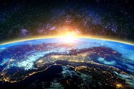
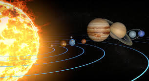

| Big Bang |
Galaxias | Agujero Negro |
Galeria |
Exploracion |
Maravillas |
Video |
Estrellas |
Planeta |
Menu |
Las estrellas nacen en gigantescos nubes de gas y polvo cósmico llamadas nebulosas. En estas regiones, la gravedad provoca que las partículas se agruparán y comiencen a colapsar. A medida que el colapso avanza, el material se calienta hasta que alcanza temperaturas lo suficientemente altas como para iniciar las reacciones nucleares. Estas reacciones producen energía en forma de luz y calor, y así nacen las estrellas.
Los planetas se forman a partir de discos de gas y polvo que rodean a las estrellas jóvenes. A medida que las partículas de polvo se agrupan por gravedad, comienzan a formar cuerpos más grandes, conocidos como planetesimales. Estos planetesimales se fusionan y crecen, y eventualmente forman planetas. El proceso puede tardar millones de años, pero da lugar a los planetas que conocemos hoy.
Aunque no podemos ver la materia oscura directamente, los astrónomos están seguros de su existencia gracias a sus efectos gravitacionales. Se cree que la materia oscura constituye alrededor del 27% del universo, pero aún no sabemos qué está hecha. Algunos científicos proponen que está formada por partículas subatómicas que interactúan débilmente con la materia normal, lo que las hace muy difíciles de detectar.
El universo es un lugar lleno de procesos complejos y asombrosos. Desde la formación de estrellas hasta el misterio de la materia oscura, los astrónomos siguen desvelando secretos del cosmos. Cada descubrimiento nos acerca más a entender cómo funciona este vasto espacio en el que habitamos. A pesar de todos los avances, aún quedan muchas preguntas sin respuesta, lo que hace que el estudio del universo sea una aventura sin fin.
.